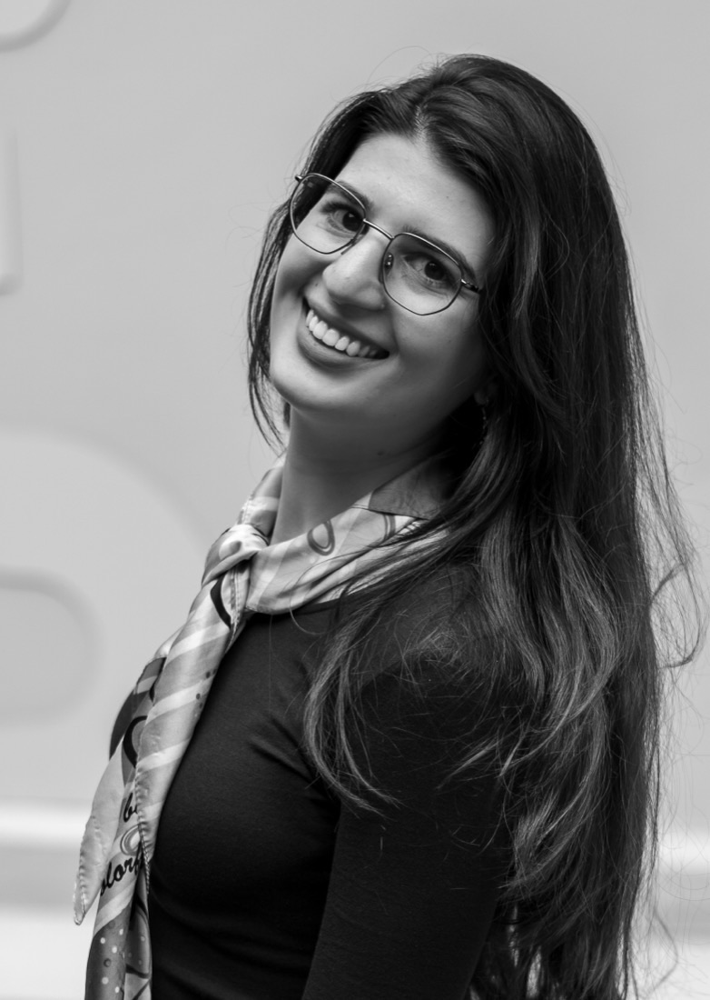

About me
I am a PhD candidate in applied mathematics at CEREMADE, Université Paris Dauphine-PSL, under the supervision of Emmanuel Lepinette. I work in mathematical finance and probability, developing explicit, computable methods for hedging under transaction costs.
I studied at the École Normale Supérieure de Tunis and ranked third in the 2019 national agrégation in mathematics. I then taught mathematics for four years as a professeure agrégée at the Preparatory Institute for Engineering Studies of Monastir, Tunisia. I also hold a Master's degree in Mathematics and Applications from the Université de Monastir (2023), where I graduated first in my cohort, with a thesis on Gaussian processes carried out at LIMOS, Université Clermont Auvergne.
Research
My work draws on stochastic analysis, convex analysis and dynamic programming, and is organised around two themes:
- Mathematical finance: explicit recursive computation of super-hedging prices and strategies in discrete-time markets with proportional transaction costs [1, 3], and dynamic programming for the continuous-time case [6].
- Random sets and ordered structures: conditional random sets in Polish spaces, with applications to the Skorokhod space [4], and concentration inequalities in Riesz spaces [2, 7].
Publications and preprints
- [1]
-
[2]
M. A. Ben Amor, A. Omrani. Chernoff's inequality in Riesz spaces. Quaestiones Mathematicae 46(9), 1777–1787, 2023. DOI.
- [3]
-
[4]
E. Lepinette, A. Omrani. Conditional random sets in Polish spaces with applications to the Skorokhod space. Journal of Mathematical Analysis and Applications, under revision. HAL.
- [5]
In preparation
-
[6]
E. Lepinette, A. Omrani, W. Yan. Continuous-time markets with transaction costs: superhedging, dynamic programming, and path-dependent HJB–QVI.
-
[7]
M. A. Ben Amor, A. Omrani. Order-valued Bennett and Hoeffding inequalities in Riesz spaces.
PhD thesis
Explicit Computation of Super-Hedging Prices and Strategies under Transaction Costs, Université Paris Dauphine-PSL, 2026.
Teaching
Université Paris Dauphine-PSL
- 2026–27 Monte Carlo Methods (Master 1): two computer-lab groups in R and two tutorial groups. Course materials
- Spring 2027 Statistics (Bachelor L3).
- 2025–26 Introduction to Finance (Bachelor): derivatives and options (30 students, 40 hours).
- 2024–25 Statistics (Bachelor L2): lectures, tutorials and assessment design (30 students, 50 hours).
- 2024–25 AI Projects: supervision of student data-analysis projects in Python (30 students, 15 hours).
Preparatory Institute for Engineering Studies of Monastir
- 2019–23 Algebra I & II: full responsibility for lectures, tutorials and examinations (60 students per year, 18 hours per week); grader for the national engineering-school entrance examinations.
Supervision
- 2026–27 Master's thesis: Monte Carlo methods for PDEs: random walks and the Dirichlet problem.
Talks
- Oct 2026 FiME PhD Seminar, Institut Henri Poincaré, Paris, France.
- Sept 2026 COSA 2026, CIRM, Marseille, France.
- June 2026 13th Bachelier World Congress, Bologna, Italy.
- Mar 2026 CEREMADE Third-Year PhD Day, Paris, France.
- Oct 2025 Stochastics in Mathematical Finance and Physics (SMFP 2025), Hammamet, Tunisia.
- Sept 2025 Stochastics & Computational Finance (SCF 2025), Lisbon, Portugal.
- June 2025 Young Researchers' Days, CEREMADE, Paris, France.
- Apr 2025 XXVI Workshop on Quantitative Finance, Palermo, Italy.
- Jan 2025 17th Bachelier Colloquium, Métabief, France.
- May 2024 55es Journées de Statistique, Bordeaux, France.
- Oct 2022 Functional Analysis and Operator Theory South Africa Workshop, Kruger National Park, South Africa.
Schools and seminars attended
- Jan 2026 23rd Winter School on Mathematical Finance, Soesterberg, Netherlands.
- July 2025 5th Barcelona Summer School of Stochastic Analysis and Quantitative Finance, Barcelona, Spain.
- June 2024 CIMPA School: Ordered Structures in Finance and Machine Learning, Sousse, Tunisia.
- Regular Bachelier Seminar, Paris, France.
Academic service
- 2026 Co-organizer, COSA 2026, International Conference on Ordered Structures and Applications, CIRM, Marseille.
- 2024–25 Co-organizer, Young Researchers' Days, CEREMADE.